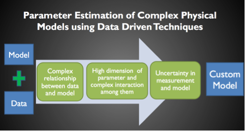

Data Inversion of Complex Physical Systems
Project Motivation
To combine mechanistic knowledge of domain physics provided by computational models and specific information of individual systems provided by measurement data, parameter estimation for system models is a powerful approach to obtaining a custom model that can not only facilitate the quantitative understanding of an individual system, but also help predict the unseen future. This is particularly important for the personalized diagnosis, treatment, and prevention of diseases in a cardiac.
Parameter estimation for a complex physical system, however, faces several critical challenges, including the complexity and lack of explicit expression for the system models, the high dimensionality of the system, the nonlinear interaction and correlation between different parameters, and the uncertainty inherent in both the system models and external measurements. In the CBL, we are developing new Bayesian Inference and MCMC methods for combating these challenges.
| Name | Research Members | |
|---|---|---|
| 1 | Data Inversion of Complex Physical Systems | Jwala Dhamala, Linwei Wang |
| 2 | Parameter Estimation of Complex Physical Models using Data Driven Techniques | Jwala Dhamala, Linwei Wang |
- Data Inversion of Complex Physical Systems
Computational models contain rich domain knowledge about the generic mechanism and material properties of a physical system. However, these models are generic and are in general decoupled from specific properties and behaviours of a specific system. On the other hand, there is a growing quantity and quality of data available for analysis of specific systems. These data are often collected though an indirect measurement process and, to convert these data to meaningful knowledge about the underlying system, data analysis often struggles for relevant domain context that can help overcome the limited information in the data.


Parameter estimation for a complex physical system, however, faces several critical challenges, including the complexity and lack of explicit expression for the system models, the high dimensionality of the system, the nonlinear interaction and correlation between different parameters, and the uncertainty inherent in both the system models and external measurements. In the CBL, we are developing new Bayesian Inference and MCMC methods for combating these challenges.
- Parameter Estimation of Complex Physical Models using Data Driven Techniques
Parameter estimation faces several critical challenges unique to the data inversion of complex physical systems: the lack of explicit expression for the system models, the high dimensionality of the system, the nonlinear interaction and correlation between different parameters, and the uncertainty inherent in both the system models and external measurements.
 At CBL, we are working on developing new Bayesian Inference, MCMC sampling and dimensionality reduction techniques to overcome these challenges.